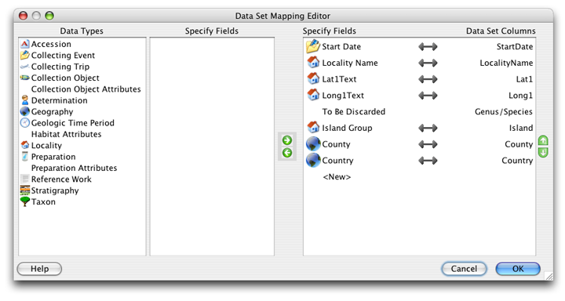
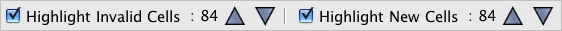
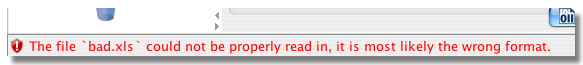

O WorkBench pode facilmente importar dados de um arquivo CSV (valor separado por vírgula ou texto delimitado por vírgula) para um novo Conjunto de Dados.
Notas:
Para iniciar, selecione a ação Importar Dados na barra lateral e escolha o arquivo a ser importado na caixa de diálogo.
A seguinte caixa de diálogo irá abrir:
Importar de CSV
A caixa de diálogo permite ao WorkBench importar o arquivo permitindo ao usuário que escolha opções de importação de dados.
A janela de Visualização de Dados lê e mostra uma amostra dos títulos da coluna e dados do arquivo. Se o arquivo não tiver títulos de coluna, as colunas serão nomeadas em ordem numérica (Coluna 1, Coluna 2, etc.).
Importações incorretas serão visíveis na janela Visualização de Dados e terão um ícone e uma messagem de aviso.
Opções de Importação Incorretas
Para corrigir as informações exibidas, escolha entre diferentes opções da caixa de diálogo na janela Importação de Dados. Quando as 'Opções de Importação de Dados' estão corretas, a janela de Visualização exibirá o arquivo CSV corretamente, o ícone de aviso desaparecerá e o diálogo será parecido com oImportar de CSV' acima.
O próximo passo no processo de importação será mapear os títulos de coluna do arquivo para os campos do Specify.
O Workbench inclui a opção 'auto-mapear' que identifica o título e compara com Conjuntos de Dados existentes. Se a coluna combinar com as de algum Conjunto de Dados, irá abrir a seguinte caixa de diálogo:

Títulos de coluna do novo Conjunto de Dados
Para copiar o 'mapa' de um Conjunto de Dados existente selecione o botão 'Usar um mapeamento de Conjunto de Dados existente' e escolha o Conjunto de Dados. A caixa de diálogo das propriedades do Conjunto de Dados irá abrir, para nomear e descrever o novo Conjunto de Dados.
Para criar um novo mapa para o novo Conjunto de Dados selecione o botão 'Criar novo Mapeamento de Conjunto de Dados' e clique em 'OK'.
Nota: Mapeamentos só poderão ser re-utilizados se o arquivo CSV, sendo importado, tiver o mesmo número ou menos de campos que o mapeamento. Por outras palavras, se o arquivo CSV for dividido em dois arquivos menores, quando importar o primeiro CSV mas não fizer o mapeamento de todos os campos, os campos não mapeados serão descartados. Então, ao importar o segundo arquivo CSV NÃO será dada a opção para re-utilizar o mapeamento criado para o primeiro arquivo. Para re-utilizar o mapeamento é preciso primeiro apagar os campos não mapeados/descartados do CSV antes de importá-lo ao WorkBench.
O 'auto-mapeamento' então irá comparar a importação dos títulos das colunas com os campos dos mapas e do Specify para combiná-los.

Cabeçalhos de coluna mapeados automaticamente no Editor de Mapeamento de Conjunto de Dados
Os títulos das colunas do arquivo de importação aparecem em 'Colunas do conjunto de dados' no lado direito da caixa de diálogo e são mapeados para 'campos do Specify' à esquerda.
Os cabeçalhos de coluna mapeados para campos do Specify são identificados por (linked) ícone.
Os cabeçalhos de coluna que não foram mapeados automaticamente mostrarão um 'Para ser descartado' exibido em 'Campos do Specify'. Os títulos de coluna não mapeados serão excluídos se não forem mapeados para um Campo do Specify, antes de clicar em 'OK'.
Os botões na caixa de diálogo permitem que as colunas sejam mapeadas, não mapeadas, adicionadas, excluídas e reordenadas.
| Icon | Nome | Resultado |

|
Mapear | Adiciona o campo a lista de colunas. |
|
|
Não mapear | Remove o campo da lista de colunas. |

|
Reordenar acima | Move o campo selecionado para cima. |

|
Reordenar abaixo | Move o campo selecionado para baixo. |
Para Mapear uma coluna de um Conjunto de Dados Não Mapeado para um campo Specify:
(map).
Para Não Mapear a coluna de um campo:
Para adicionar coluna
(map).
Um  (link) ícone confirmará que a coluna e o campo têm o mesmo título.
(link) ícone confirmará que a coluna e o campo têm o mesmo título.
Nota: Um campo deverá ser mapeado apenas uma vez. Campos do Specify mapeados apresentam uma marca verde de 'check' próximo ao nome do Campo do Specify numa lista confirmando que estão em uso.
Nota: Quando importar informação sobre Taxon use somente a tabela Somente Taxon no Editor de Mapa.
Nota: A tabela Agente no editor de mapeamento só pode ser usada para informações do agente. Ao fazer upload de informações do agente junto com informações do objeto de coleção, use os campos Título do Catalogador, Nome, Nome do meio e Sobrenome na Tabela de objetos de coleção.
Quando todas as Colunas estiverem mapeadas e ordenadas corretamente, clique no botão 'OK'.
Conclua o processo de importação nomeando e descrevendo o novo Conjunto de Dados:

Propriedades do Conjunto de Dados
Arquivos de importação que não contêm cabeçalhos de coluna não podem ser 'auto-mapeados' para Campos do Specify. As colunas então são rotuladas de acordo com sua ordem numérica e precisam ser manualmente mapeadas.

Mapa do arquivo de importação sem títulos de coluna
Colunas sem títulos exibem 'Para ser descartado' em vez de mapear para um Campo do Specify. Os cabeçalhos de coluna não mapeados serão excluídos se não forem mapeados para um campo Specify antes de clicar em 'OK'.
Os botões na caixa de diálogo permitem que as colunas sejam mapeadas, não mapeadas, adicionadas, excluídas e re-ordenadas. A função de cada botão é descrita abaixo:
| Ícone | Nome | Resultado |
|
|
Mapa | Adiciona o Campo a lista de colunas. |
|
|
Não mapear | Remove o Campo da lista de colunas. |
|
|
Re-ordenar acima | Move o Campo selecionado para cima. |
|
|
Re-ordenar abaixo | Move o Campo selecionado para baixo. |
Para mapear uma coluna de Conjunto de Dados Não Mapeado para um Campo do Specify:
(mapa).
Para Não Mapear uma coluna de um campo:
Para adicionar uma coluna
(mapa).
Um ícone (link) confirma que a
coluna e o campo são do mesmo título.
Nota: um campo só pode ser mapeado uma vez. Campos do Specify que são mapeados exibirão uma marca de seleção verde, ao lado de seu nome na lista de campos do Specify, confirmando que eles estão em uso.
Nota: Ao importar informações do Taxon, use apenas a Tabela Somente Taxon no editor de mapeamento.
Nota: A tabela Agente no editor de mapeamento só pode ser usada para informações do agente. Ao carregar informações do agente junto com informações do objeto de coleção, use os campos Título do Catalogador, Nome, Nome do meio e Sobrenome na Tabela de objetos de coleção.
Quando todas as colunas estiverem mapeadas e ordenadas corretamente, clique no botão 'OK'.
Conclua o processo de importação nomeando e descrevendo o novo Conjunto de Dados:
Propriedades do conjunto de dados
Para renomear os títulos das colunas, consulte Edição de formulário.
Nota: quando o conjunto de dados abre a validação para campos inválidos, será ativada. A validação pode ser desativada desmarcando o Destacar Células inválidas no painel de validação, na parte inferior do WorkBench.

Painel de validação
Arquivos CSV que estão corrompidos ou não foram salvos corretamente não serão importados corretamente para o WorkBench. Um arquivo inválido pode aparecer no Editor de mapeamento de conjuntos de dados com coluna parcial ou nenhum cabeçalho, ou exibir um aviso na parte inferior da janela do WorkBench:

Aviso de arquivo inválido